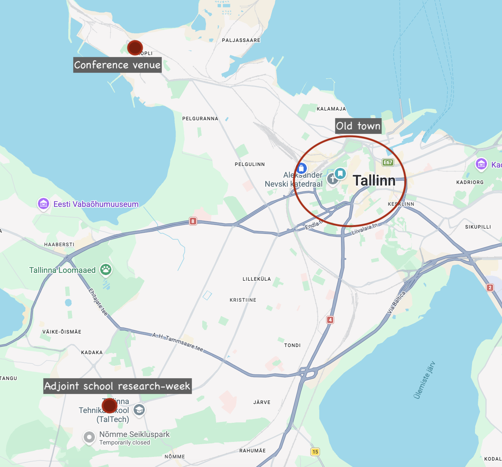

The conference will be held at the TalTech Maritime Academy building, located at the northern tip of the Kopli peninsula in Tallinn. The site is very well served by public transport: Trams numbered 1, 2 and 5 connect it to the center of Tallinn and the old town.
The adjoint school research week will happen at the ICT building (TTÜ Infotehnoloogia Maja) of Tallinn University of Technology. The ICT building is connected to the city center (old town) by many bus routes (Routes 83 and 11E stop in front of the building). The conference venue is about 10 kms away and is also connected bus.

Tallinn Airport (TLL) offers direct flights to many European cities and is also well-connected to several regional hubs, with several daily flights to Helsinki, Warsaw, Stockholm and Frankfurt.
It is also possible to get to Tallinn by ferry from Helsinki (~2 hours, several daily connections), and by coach from Riga, Vilnius and other cities in the Baltic region.
Tallinn has an excellent and affordable local transport network. The conference venue is accessible by tram routes 1, 2, and 5 from city center.
Some links you may find useful planning your trip:
There are plenty of accommodation choices for all budgets in the area.
Popular Airbnb areas along tram lines 1, 2, and 5 to Kopli include, but are not limited to, Old Town, the city center, Telliskivi, and Kalamaja.
Hotels:
We have an agreed discount rate for a limited number of rooms for conference participants at several local hotels (we expect to add a few more hotels to the list soon):
Radisson Collection Hotel , Tallinn (5* Superior) Address: Rävala Puiestee 3, Tallinn, 10143, Estonia
Located in the heart of Tallinn, the Radisson Collection Hotel offers a remarkable blend of sophistication and local charm. As a leading business hotel in the area, it caters to the needs of discerning travelers seeking both comfort and convenience. With its commitment to providing local authentic experiences, vibrant social scenes, and living design, the Radisson Collection Hotel in Tallinn stands out as a premier destination for business and leisure travelers alike. The hotel also has two beautiful restaurants and bars (MEKK serving Estonian modern cuisine and ISSEI providing Nikkei cuisine on rooftop), as well as an ambient wellness area and well-equipped gym.
Special offer for The 9th International Conference on Applied Category Theory (ACT) 2026 Period of stay: 5 - 11 July 2026
Collection room is 165.00 Euros for single use per night; 175.00 Euros for double use per night. Rates include: Exceptional buffet and a 'la carte breakfast in restaurant MEKK (served on weekdays 6.30-10.30, weekend 07.00-11.00), access to spacious gym and spa area (indoor pool, Japanese bath, 2 saunas, sanarium), WiFi and VAT 13%.
Booking contacts: reservations.tallinn@radissoncollection.com or +372 682 3500 For an agreed rate, please mention booking code ACT2026 when making the reservation.
Guests will pay for their accommodation directly at the hotel upon check-in. When making a reservation, we kindly ask guests to provide credit card details to guarantee their booking. Reservations can be cancelled free of charge up to 48 hours before arrival. Rooms are subject to availability.
Park Inn by Radisson Central Tallinn (4*) Address: Narva Mnt 7c, Tallinn, 10117 Estonia
Park Inn by Radisson Central Tallinn is a contemporary and comfortable hotel situated in the heart of Tallinn, within walking distance of the Old Town. It provides convenient accommodation and a relaxed atmosphere, perfect for both business guests and city visitors.
Period of stay: 5 - 11 July 2026 Standard and superior rooms: Park Inn by Radisson Central, ACT2026 Promocode: ACT2026
Radisson Blu Olumpia Hotel, Tallinn (4*) Address: Liivalaia 3, Tallinn, 10118, Estonia
Radisson Blu Olumpia Hotel is a centrally located, upscale hotel in Tallinn offering modern accommodation, extensive conference facilities, and panoramic city views. It is ideal for both business and leisure travelers seeking comfort, convenience, and high-quality service.
Period of stay: 5 - 11 July 2026 Superior room: Radisson Blu Hotel Olumpia, ACT2026 Promocode: ACT2026